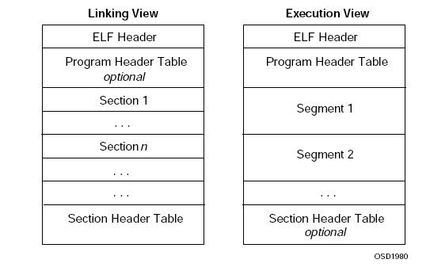

2014-11-20 程序内存区域分配五个段 终于搞明白了 CSDN博客.html
HEAD TAGS:
ELF
BLOCK TAGS:
ELF
ELF-File
ELF-Struct
exe-file
lib-file
o-file
readelf
ELF Files

o–file (name=relocalble file, ptag=File, 可重定位文件)
ELF-File
o-file
File
exe–file (ptag=File, 可执行文件)
ELF-File
exe-file
File
lib–file (name=shared library, 共享库)
lib-file
ELF-Segment
段
实际上就是由
ELF-Section
节
组成的，将相应的一些
ELF-Section
节
映射到一起就叫
ELF-Segment
段
了,就是说
ELF-Segment
段
是由0个或多个
ELF-Section
节
组成的，实际上本质都是
ELF-Section
节
。
ELF-Struct
可以通过命令
readelf
查看
ELF
Executable and Linkable Format
文件的格式和组成。
ELF
readelf
readelf –l a.out
® UNI TOOL